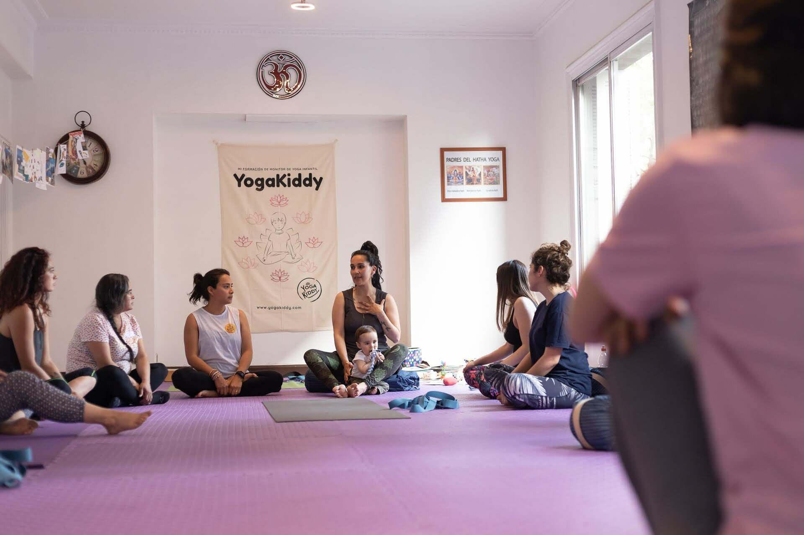

Hola a todas.
Quiero hablar de un tema que me apasiona y que considero esencial para el bienestar de nuestros hijos: el yoga.
Como padres, todos queremos lo mejor para nuestros hijos. Queremos que sean felices, sanos y capaces de afrontar el estrés de la vida cotidiana. Queremos que tengan la oportunidad de desarrollar todo su potencial y vivir una vida plena. Y una de las formas más eficaces de dar a nuestros hijos esta oportunidad es a través del yoga.
Pero seamos sinceros, en el ajetreado mundo actual puede resultar difícil encontrar tiempo para prestar a nuestros hijos la atención y los cuidados que necesitan para prosperar. Por eso me hace tanta ilusión hablarte de una oportunidad que me parece realmente única y especial: un programa de formación de fin de semana para enseñar yoga a niños en Santiago, Chile.
Este programa de formación intensiva de 18 horas y dos días de duración está diseñado para proporcionarle las habilidades y los conocimientos necesarios para crear sesiones de yoga para niños que tengan éxito. Lo imparten profesores de yoga experimentados que conocen a fondo cómo adaptar el yoga a los niños y que utilizarán diversos métodos interactivos y atractivos para garantizar que los participantes aprendan de forma divertida y eficaz.
El programa se adapta a las necesidades específicas de los niños, centrándose en el desarrollo de su bienestar físico y mental, con un enfoque positivo y lúdico. Cubriremos una amplia gama de prácticas de yoga, incluyendo asana, pranayama y meditación, así como la forma de crear clases exitosas, adaptar poses y utilizar juegos y accesorios.
Pero esta formación de yoga para niños en Santiago, Chile no consiste sólo en aprender nuevas habilidades. Se trata de inspirar un sentido de calma y equilibrio en nuestros hijos, enseñándoles a respirar, concentrarse y relajarse. Se trata de ayudarles a desarrollar la resiliencia y la fortaleza mental que necesitan para afrontar los retos de la vida cotidiana. Se trata de fomentar el conocimiento de sí mismos, la confianza en sí mismos y la conexión con ellos mismos y con los demás, para prepararlos para un futuro feliz y saludable.
Sé que como padres y profesionales de la educación o la salud que trabajamos con niños, todos queremos lo mejor para ellos. Y creo que este programa de formación es la mejor inversión que podemos hacer en su bienestar. Es una oportunidad que no podemos desaprovechar. Les invito a todos a que se unan a nosotros durante los próximos fines de semana y empiecen a influir positivamente en los niños.
Carmen
Cofundadora de YogaKiddy